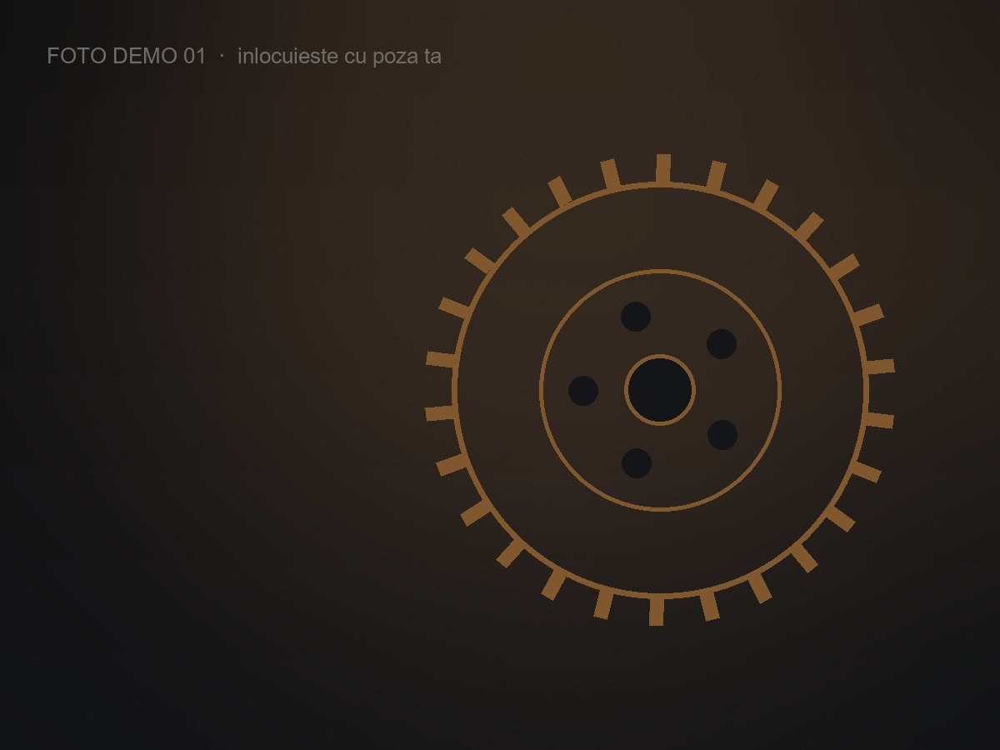
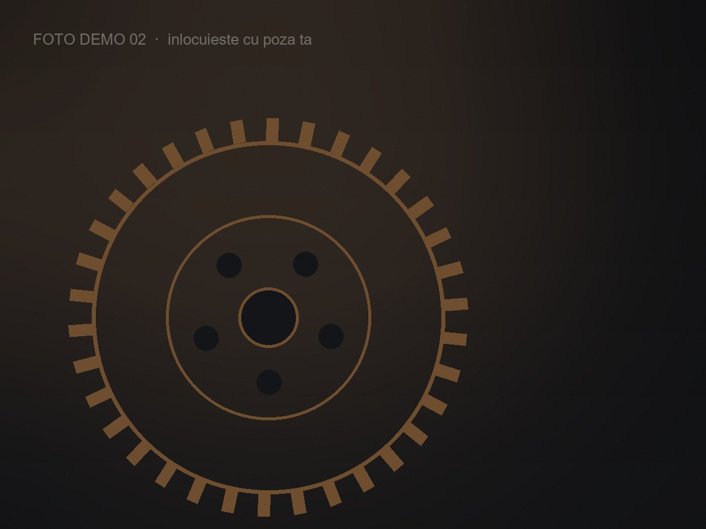
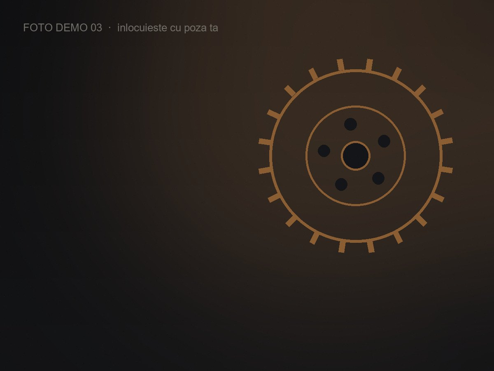
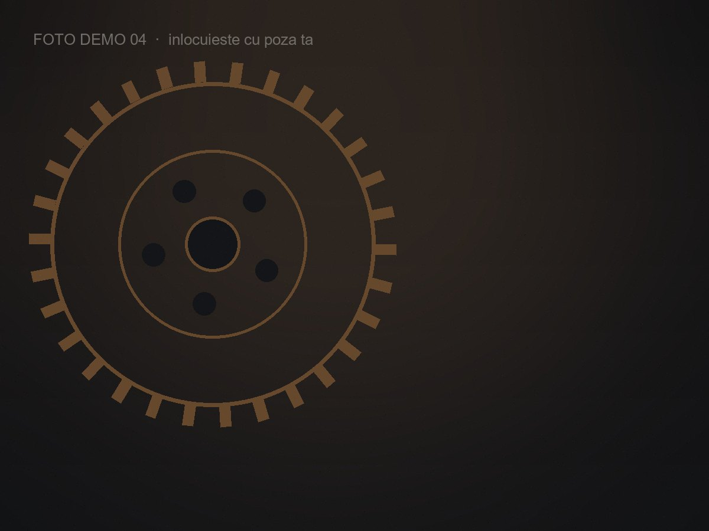
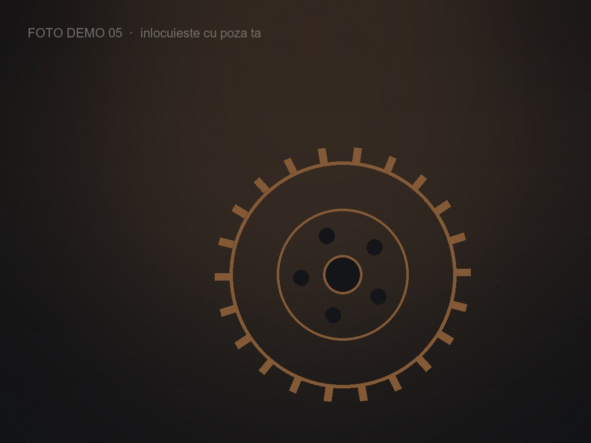
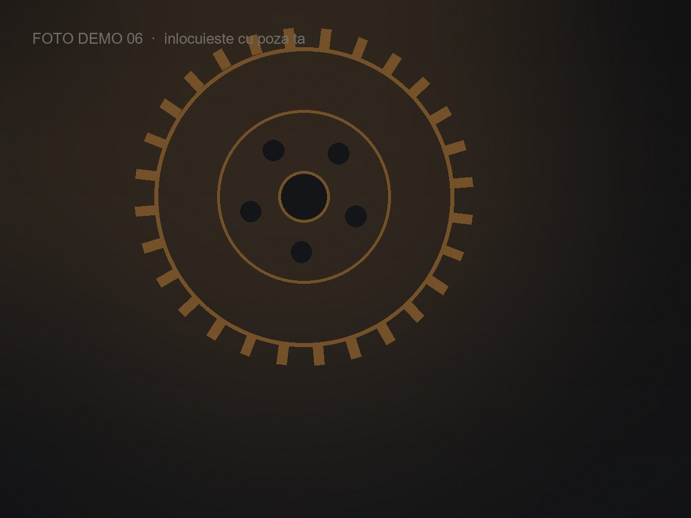

Reparăm Iveco.
Simplu și corect.
Îl aduci cu o problemă, îl iei reparat. Lucrez doar cu Iveco Daily 2.3 și 3.0, an 2012 sau mai nou, în atelierul din Iași.
DeruleazăDemontăm.
Reparăm.
Reasamblăm.
La 2.3 și la 3.0 lanțul se întinde, patinele se uzează, calarea pleacă. Se schimbă kitul întreg și se remontează pe repere — nu se improvizează.
- 01DemontatKit scos complet, componente verificate la uzură.
- 02AsamblarePinioane calate pe repere, patine și întinzător noi.
- 03FuncționalProbă la rece și la cald înainte de predare.
Coroană și pinion,
cu jocul măsurat.
Un grup nu se „strânge și gata”. Rulmenții se montează cu preîncărcare, jocul între dinți se reglează din șaibe, iar pata de contact se verifică cu pastă înainte de închidere.
- 01DemontatRulmenți, simeringuri și șaibe de reglaj verificate.
- 02ReglajPreîncărcare la cuplu, joc între dinți din șaibe.
- 03Pată de contactVerificată cu pastă înainte de închidere.
Mecanică de Iveco Daily.
Tot ce ține de motor și transmisie, pe Iveco Daily 2.3 și 3.0. Diagnoză înainte de deviz, piese verificate la toleranțe de fabrică, probă de funcționare înainte de predare.
Diagnoză mecanică
Identificarea reală a cauzei înainte de deviz — fără presupuneri și fără piese schimbate degeaba.
Motor & chiulasă
Garnituri de chiulasă, pompe de ulei, radiatoare și lucrări de bloc motor.
Lanț de distribuție
Kit complet pentru 2.3 și 3.0: lanț, pinioane, întinzător și patine, calat pe repere.
Ambreiaj
Set complet — disc, placă, rulment — cu verificarea volantei înainte de montaj.
Grup spate
Coroană, pinion de atac, rulmenți și simeringuri, cu joc și pată de contact reglate.
Cutie & transmisie
Cutii de viteze, cardane, cruci și rulmenți de sprijin — toată linia de transmisie.
Frâne
Discuri, plăcuțe, etrieri, tamburi și conducte — partea mecanică a sistemului de frânare.
Ce preiau
Doar Iveco Daily 2.3 și 3.0, an 2012 sau mai nou. Fără camioane. Atelier în Iași.
Fără intervenții pe partea electrică și fără suspensii sau direcție. Atelierul lucrează exclusiv pe mecanica de motor și transmisie.
Din atelier.
Câteva lucrări duse până la capăt. Trage cu degetul sau folosește săgețile.






Ce spun clienții.
Ai fost la noi? Scrie și tu câteva rânduri în formularul de mai jos.
„Grupul spate era terminat, credeam că trebuie schimbată mașina. L-a recondiționat și merge mai silențios ca înainte.”
„Lanț de distribuție schimbat la timp, cu calare perfectă. Zero probleme după 40.000 km.”
„Ambreiajul patina de câteva luni. Diagnosticat corect din prima și rezolvat într-o zi.”
Lasă o recenzie
Spune în câteva rânduri cum a mers reparația. Apare imediat pe pagină.
Adu vehiculul
la Sergiu.
Nume, telefon, numărul de înmatriculare, kilometrajul și ce problemă are vehiculul. Mesajul ajunge direct pe WhatsApp.
Vehiculul tău.
Meseria noastră.
O diagnoză corectă costă mult mai puțin decât o reparație făcută de două ori. Scrie sau sună — îți spunem sincer ce e de făcut.